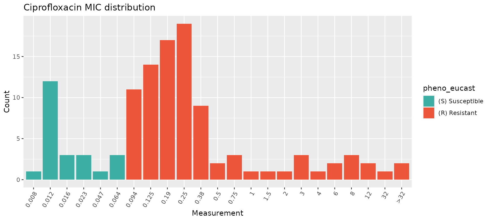
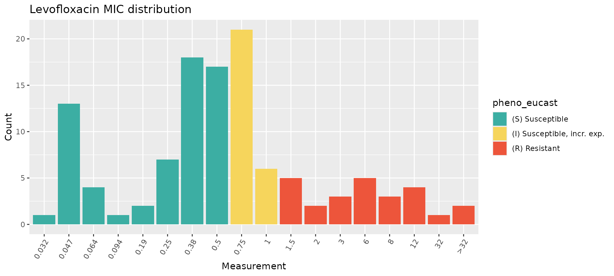
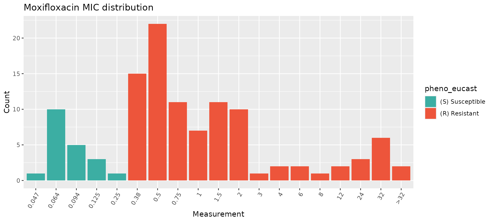
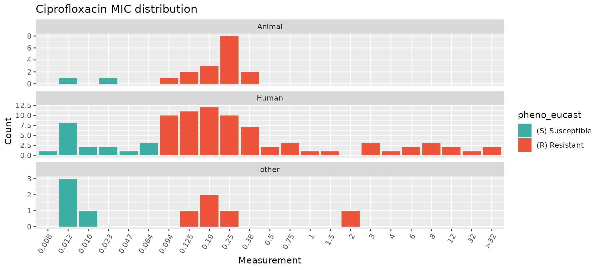
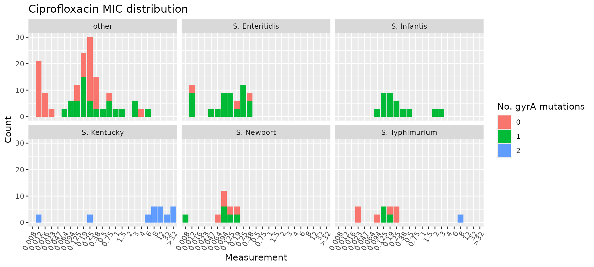
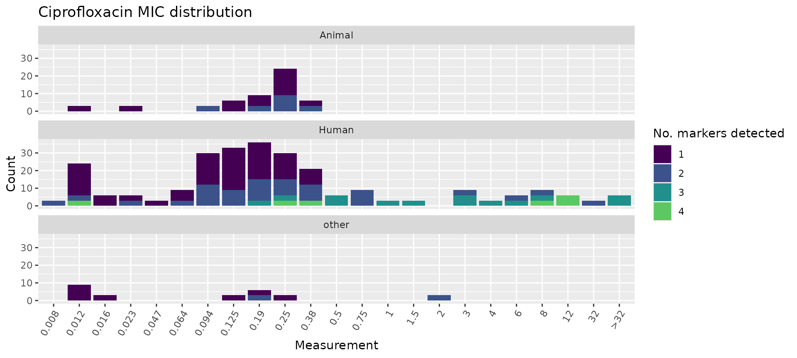
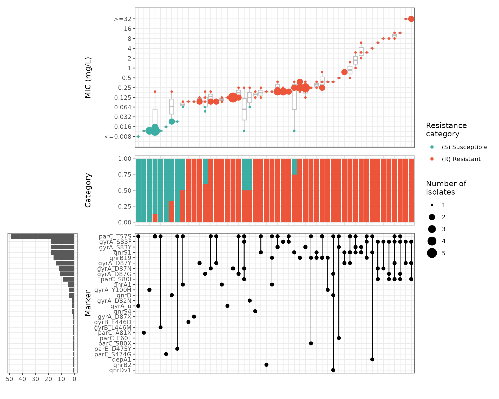
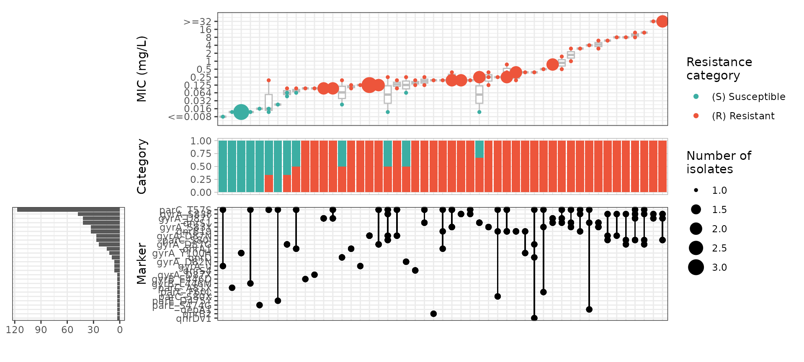

Analysing a small user-generated Salmonella geno-pheno dataset
Source:vignettes/SalmonellaExamples.Rmd
SalmonellaExamples.RmdIntroduction
This vignette shows how AMRgen can be used to explore a
small user-generated dataset with genotypic and phenotypic data for
non-typhoidal, non-invasive Salmonella enterica isolates.
Phenotypic data consists of MIC E-test results for ciprofloxacin,
levofloxacin, and moxifloxacin. Genotypic data includes AMRFinderPlus
results for quinolone resistance markers.
Start by loading the package:
library(AMRgen)
library(dplyr)
#>
#> Attaching package: 'dplyr'
#> The following objects are masked from 'package:stats':
#>
#> filter, lag
#> The following objects are masked from 'package:base':
#>
#> intersect, setdiff, setequal, union
library(ggplot2)
library(tidyr)Import data
In this example, the data table was exported from the user’s
laboratory information management system as a single .csv
file that includes both genotypic and phenotypic results for 115 S.
enterica isolates, with one line per isolate. There are columns for
two categorical variables of interest: isolate source (human, animal, or
other) and isolate serovar. Genotype data is stored in a single column,
and where multiple quinolone resistance markers were identified, these
are listed in a string with semicolon delimiters. Phenotype data is
stored in separate columns for each antimicrobial agent that was tested
(ciprofloxacin, levofloxacin, moxifloxacin).
# Raw data table
salm_raw <- read_csv(here::here("data", "Salmonella_pheno_geno_data.csv"))
head(salm_raw)
#> # A tibble: 6 × 7
#> Sample Source Serovar CpL_Genotype Ciprofloxacin Levofloxacin Moxifloxacin
#> <chr> <chr> <chr> <chr> <chr> <chr> <chr>
#> 1 SAL001 Animal other gyrA_S83F;p… 0.19 0.5 0.5
#> 2 SAL002 Human S. Enterit… gyrA_S83Y 0.38 1.5 1.5
#> 3 SAL003 Human other gyrA_S83F;p… 3 12 24
#> 4 SAL004 other S. Infantis gyrA_D87G 0.125 0.5 0.5
#> 5 SAL005 Human other gyrA_D87Y 0.094 0.25 0.38
#> 6 SAL006 Human S. Kentucky gyrA_S83F;g… 8 8 32The AMRgen package requires separate phenotypic and
genotypic tables with specific column headers, so the next step is to
separate and wrangle these data into the required formats.
Genotype table
To use downstream AMRgen functions, a genotype table
must have at a minimum the following columns: Name (unique
sample name for each isolate), marker (name of the
resistance marker detected), and drug_class (antibiotic
class associated with this marker). It also needs to be in long form,
with a row for each isolate/marker combination. In our dataset, the
genotype information is found in a single column alongside the metadata
and phenotypic information, and we can have multiple markers per row (up
to four). Here, we carry out the following steps to generate a genotype
table that is compatible with AMRgen functions: * Select
only the genotype column (called CpL_Genotype in this
dataset) and the column specifying the individual isolate names (called
Sample in this dataset) * Rename the column
Sample to Name, which is the default column
heading used by AMRgen for identifying individual isolates
* Separate the genotype column CpL_Genotype into individual
columns for each marker (up to four per isolate in these data),
specifying the delimiter ; * Convert this wide-form data
(one row per isolate) to a long-form table (one row per isolate/marker
combination) using pivot_longer * Add a column specifying
that all these markers are associated with resistance to quinolones
# Extract geno data, separate by delimiter, pivot longer, and add drug_class column
salm_geno <- salm_raw %>%
select(Sample, CpL_Genotype) %>%
rename(Name = Sample) %>%
separate_wider_delim(CpL_Genotype,
delim = ";", names = c("Marker_1", "Marker_2", "Marker_3", "Marker_4"),
too_few = "align_start", cols_remove = TRUE
) %>%
pivot_longer(
cols = c(Marker_1, Marker_2, Marker_3, Marker_4),
names_to = "marker_no",
values_to = "marker",
values_drop_na = TRUE
) %>%
select(-marker_no) %>%
mutate(
drug_class = "Quinolones",
drug_agent = NA_character_
) ## the variable drug_agent appears essential for get_binary_matrix function to work...
# Check the format of the processed genotype table
head(salm_geno)
#> # A tibble: 6 × 4
#> Name marker drug_class drug_agent
#> <chr> <chr> <chr> <chr>
#> 1 SAL001 gyrA_S83F Quinolones NA
#> 2 SAL001 parC_T57S Quinolones NA
#> 3 SAL002 gyrA_S83Y Quinolones NA
#> 4 SAL003 gyrA_S83F Quinolones NA
#> 5 SAL003 parC_T57S Quinolones NA
#> 6 SAL003 qnrB19 Quinolones NAPhenotype table
To use downstream AMRgen functions, a phenotype table
must be in long form with a single column for all antimicrobial agents
that were tested, rather than separate columns for each agent. It also
needs to have at a minimum the following columns: id
(unique sample name for each isolate), spp_pheno (species
name formatted as per the AMR package mo class),
drug_agent (antimicrobial agent name formatted as per the
AMR package ab class), a S/I/R phenotype column (e.g. one
or more of pheno_eucast, pheno_clsi,
pheno_provided, ecoff). If raw assay data is
to be included, it needs to be in a column called mic
and/or disk.
To convert out dataset to this format, we begin by extracting the
columns with the unique isolate names (Sample) and those
with the MIC results for the three antimicrobial agents that we tested
(Ciprofloxacin, Levofloxacin,
Moxifloxacin). We also keep the columns with additional
metadata (Source, Serovar), as these are not
in the genotype table. The antimicrobial columns need to be forced to
character vectors to avoid issues caused by occasional presence of
non-numeric prefixes (> or <). We then
pivot the table to long form.
# Pheno table: select columns with sample ID, metadata, and antimicrobials tested, then pivot to long form
salm_pheno <- salm_raw %>%
select(Sample, Source, Serovar, Ciprofloxacin, Levofloxacin, Moxifloxacin) %>%
mutate(across(c(Ciprofloxacin, Levofloxacin, Moxifloxacin), as.character)) %>%
pivot_longer(
cols = c(Ciprofloxacin, Levofloxacin, Moxifloxacin),
names_to = "antibiotic",
values_to = "MIC.values",
values_drop_na = TRUE
)Our phenotype data is not yet in a standard AMR/AMRgen format so we
use the helpful format_ast function to add the species
name, to format the antimicrobial and MIC columns correctly, and to
generate the S/I/R phenotype column pheno_eucast by
interpreting our Salmonella MIC data against EUCAST breakpoints. We
apply these breakpoints across our human/animal/other isolates, as our
interest is in resistance phenotypes that are potentially problematic in
human infections, including zoonotic ones.
salm_ast <- format_ast(
input = salm_pheno,
sample_col = "Sample",
species = "Salmonella enterica",
ab_col = "antibiotic",
mic_col = "MIC.values",
interpret_eucast = TRUE
)
#> Adding new micro-organism column 'spp_pheno' (class 'mo') with constant value Salmonella enterica
#> Parsing column spp_pheno as micro-organism (class 'mo')
#> Parsing column antibiotic as antibiotic (class 'ab')
#> Renaming column antibiotic to standard name 'drug_agent'
#> Parsing column MIC.values as class 'mic'
#> Renaming column MIC.values to standard name 'mic'
#> Could not find disk_col disk in input table
#> Could not find pheno_col ecoff in input table
#> Could not find pheno_col pheno_eucast in input table
#> Could not find pheno_col pheno_clsi in input table
#> Could not find pheno_col pheno_provided in input table
#> Could not find method_col method in input table
#> Could not find platform_col platform in input table
#> Could not find guideline_col guideline in input table
#> Could not find source_col source in input table
#> Interpreting all data as species: Salmonella enterica
# Check the format of the processed phenotype table
head(salm_ast)
#> # A tibble: 6 × 7
#> id drug_agent mic pheno_eucast spp_pheno Source Serovar
#> <chr> <ab> <mic> <sir> <mo> <chr> <chr>
#> 1 SAL001 CIP 0.19 R B_SLMNL_ENTR Animal other
#> 2 SAL001 LVX 0.50 S B_SLMNL_ENTR Animal other
#> 3 SAL001 MFX 0.50 R B_SLMNL_ENTR Animal other
#> 4 SAL002 CIP 0.38 R B_SLMNL_ENTR Human S. Enteritidis
#> 5 SAL002 LVX 1.50 R B_SLMNL_ENTR Human S. Enteritidis
#> 6 SAL002 MFX 1.50 R B_SLMNL_ENTR Human S. EnteritidisNow that we have formatted our data into a genotype table
(salm_geno) and a phenotype table (salm_ast)
that are compatible with AMRgen, we can use its downstream
functions for plotting distributions, combining geno/pheno data,
modeling binary drug phenotype, assessing positive predictive values of
genetic markers, and comparing how combinations of markers influence
resistance phenotype. Other vignettes outline these workflows in more
detail, so here we show only a basic workflow, focusing on how
additional metadata can be included.
Plot phenotype data distributions
Overall phenotype distributions
We begin by looking at the distribution of the MIC values in our
dataset for the three antimicrobials that we tested. If desired, these
plots could then be combined into a multipanel figure using packages
like patchwork or ggpubr.
# Plot MIC distributions coloured by S/I/R call
assay_by_var(pheno_table = salm_ast, antibiotic = "Ciprofloxacin", measure = "mic", colour_by = "pheno_eucast")
assay_by_var(pheno_table = salm_ast, antibiotic = "Levofloxacin", measure = "mic", colour_by = "pheno_eucast")
assay_by_var(pheno_table = salm_ast, antibiotic = "Moxifloxacin", measure = "mic", colour_by = "pheno_eucast")
While these plots show the MIC distributions of all isolates in our dataset, we can break this down further by isolation source (human, animal, other) and by S. enterica serovar. This can be done in a few different ways, notably by faceting and/or by modifying the colour variable.
Phenotype distributions by categorical variable
The assay_by_var function can separate plots by an
additional categorical variable by specifying facet_var
within the function. For example, we can split the Ciprofloxacin plot by
isolation source like this:
assay_by_var(pheno_table = salm_ast, antibiotic = "Ciprofloxacin", measure = "mic", colour_by = "pheno_eucast", facet_var = "Source")
Alternatively, because assay_by_var is a
ggplot2 function, it can be extended by adding
ggplot2 layers, including facet_wrap() for a
single faceting variable (to allow more control over how the facets are
displayed) or facet_grid() to facet on two variables.
assay_by_var(pheno_table = salm_ast, antibiotic = "Ciprofloxacin", measure = "mic", colour_by = "pheno_eucast") +
facet_grid(Source ~ Serovar)
Another option for displaying categorical metadata is to change the
colour variable colour_by but still show the breakpoints as
vertical lines using the guideline and species
calls within assay_by_var. If desired, you can also modify
other aspects of the plot using standard ggplot2 extensions (e.g. using
viridis to change the colour palette).
# Specify species and guideline to show breakpoints, but colour bars by isolation source
assay_by_var(pheno_table = salm_ast, antibiotic = "Ciprofloxacin", measure = "mic", colour_by = "Source", species = "Salmonella enterica", guideline = "EUCAST 2025") +
scale_fill_viridis_d(end = 0.8)
#> MIC breakpoints determined using AMR package: S <= 0.064 and R > 0.064
Combine ciprofloxacin genotype and phenotype data
Analysis of combined genotype-phenotype data must be carried out
separately for each antimicrobial agent. The first step is to generate a
combined dataframe for the specified agent from the genotype and
phenotype tables, using the get_binary_matrix() function.
As an example, we will do this for ciprofloxacin with our small S.
enterica dataset, but this could also be done for levofloxacin and
moxifloxacin.
### get_binary_matrix throws an error unless the variable drug_class is in salm_geno, even if it's empty
cip_bin <- get_binary_matrix(
salm_geno,
salm_ast,
antibiotic = "Ciprofloxacin",
drug_class_list = "Quinolones",
sir_col = "pheno_eucast",
keep_assay_values = TRUE,
keep_assay_values_from = "mic"
)
#> Defining NWT in binary matrix as I/R vs S, as no ECOFF column defined
# check format
head(cip_bin)
#> # A tibble: 6 × 31
#> id pheno mic R NWT gyrA_S83F parC_T57S gyrA_S83Y qnrB19 gyrA_D87G
#> <chr> <sir> <mic> <dbl> <dbl> <dbl> <dbl> <dbl> <dbl> <dbl>
#> 1 SAL001 R 0.190 1 1 1 1 0 0 0
#> 2 SAL002 R 0.380 1 1 0 0 1 0 0
#> 3 SAL003 R 3.000 1 1 1 1 0 1 0
#> 4 SAL004 R 0.125 1 1 0 0 0 0 1
#> 5 SAL005 R 0.094 1 1 0 0 0 0 0
#> 6 SAL006 R 8.000 1 1 1 0 0 0 0
#> # ℹ 21 more variables: gyrA_D87Y <dbl>, gyrA_D87N <dbl>, qnrS1 <dbl>,
#> # qnrA1 <dbl>, gyrA_D87X <dbl>, qepA1 <dbl>, parC_S80I <dbl>, gyrA_u <dbl>,
#> # gyrA_D82N <dbl>, qnrB2 <dbl>, qnrD <dbl>, gyrB_E446D <dbl>, qnrDv1 <dbl>,
#> # parE_S474G <dbl>, gyrA_Y100H <dbl>, parC_S80X <dbl>, parC_F60L <dbl>,
#> # parE_D475Y <dbl>, qnrS4 <dbl>, gyrB_L446M <dbl>, parC_A81X <dbl>
# list colnames (alphabetically) to see full list of quinolone markers in data
# (will include additional columns id, pheno, mic, NWT, R, Source, and Serovar)
sort(colnames(cip_bin))
#> [1] "gyrA_D82N" "gyrA_D87G" "gyrA_D87N" "gyrA_D87X" "gyrA_D87Y"
#> [6] "gyrA_S83F" "gyrA_S83Y" "gyrA_u" "gyrA_Y100H" "gyrB_E446D"
#> [11] "gyrB_L446M" "id" "mic" "NWT" "parC_A81X"
#> [16] "parC_F60L" "parC_S80I" "parC_S80X" "parC_T57S" "parE_D475Y"
#> [21] "parE_S474G" "pheno" "qepA1" "qnrA1" "qnrB19"
#> [26] "qnrB2" "qnrD" "qnrDv1" "qnrS1" "qnrS4"
#> [31] "R"This binary matrix can be used for numerous downstream analyses, as described in other vignettes. Here, we show how some can be modified with additional metadata variables.
The get_binary_matrix() output (cip_bin)
did not retain our additional metadata variables Source and
Serovar. To use these variables in downstream analyses, we
first extract them from salm_pheno and then join to
cip_bin to create cip_bin_meta, which can be
used in plotting functions (warning: statistical model functions may not
work correctly with these additional metadata so cip_bin
should be used in those instead of cip_bin_meta).
salm_metadata <- salm_pheno %>%
select(Sample, Source, Serovar) %>%
rename(id = Sample)
cip_bin_meta <- left_join(cip_bin, salm_metadata)
#> Joining with `by = join_by(id)`Plot ciprofloxacin phenotype by number of mutations and Serovar/Source
Joining the metadata to cip_bin allows us to colour the
MIC distribution plot by the number of mutations in gyrA and
facet by Serovar, highlighting that all S. Infantis
isolates had one gyrA mutation and all S. Kentucky isolates had
two gyrA mutations, whereas other serovars had variable numbers
of mutations.
# count the number of gyrA mutations per genome
gyrA_mut <- cip_bin_meta %>%
dplyr::mutate(gyrA_mut = rowSums(across(contains("gyrA_") & where(is.numeric)), na.rm = T)) %>%
select(mic, gyrA_mut, Source, Serovar)
# plot the MIC distribution, coloured by count of gyrA mutations
mic_by_gyrA_count <- assay_by_var(gyrA_mut, measure = "mic", colour_by = "gyrA_mut", colour_legend_label = "No. gyrA mutations", antibiotic = "Ciprofloxacin") + facet_wrap(~Serovar)
#> WARNING: Column 'drug_agent' not found in phenotype table, so can't input matrix to specified antibiotic.
#> Ensure your input table is already filtered to the antibiotic.
mic_by_gyrA_count
Similarly, we can plot the total number of markers per isolate and
facet by Source.
# count the number of genetic determinants per genome
marker_count <- cip_bin_meta %>%
mutate(marker_count = rowSums(across(where(is.numeric) & !any_of(c("R", "NWT"))), na.rm = T)) %>%
select(mic, marker_count, Source, Serovar)
# plot the MIC distribution, coloured by count of associated genetic markers
mic_by_marker_count <- assay_by_var(marker_count, measure = "mic", colour_by = "marker_count", colour_legend_label = "No. markers detected", antibiotic = "Ciprofloxacin", bar_cols = viridisLite::viridis(max(marker_count$marker_count) + 1)) +
facet_wrap(~Source, ncol = 1)
#> WARNING: Column 'drug_agent' not found in phenotype table, so can't input matrix to specified antibiotic.
#> Ensure your input table is already filtered to the antibiotic.
mic_by_marker_count
Plot ciprofloxacin phenotype by combinations of markers
We can look at how combinations of markers are associated with
phenotypic ciprofloxacin MIC by generating an UpSet plot with the
amr_upset function. This function does not accept extra
metadata columns so we use cip_bin instead of
cip_bin_meta here. As our dataset is quite small, we keep
all the combinations, including those with a single isolate
(min_set_size = 1).
# Compare ciprofloxacin MIC data with quinolone marker combinations,
# using the binary matrix we constructed earlier via get_binary_matrix()
cipro_mic_upset <- amr_upset(
cip_bin,
min_set_size = 1,
assay = "mic",
order = "value"
)
We can generate UpSet plots a subset of isolates by filtering on one
of our additional metadata variables and then running
amr_upset(). For example, we can focus on the human
isolates only:
cip_bin_human <- cip_bin_meta %>%
filter(Source == "Human") %>%
select(-Source, -Serovar)
cipro_mic_upset_human <- amr_upset(
cip_bin_human,
min_set_size = 2,
assay = "mic",
order = "value"
)